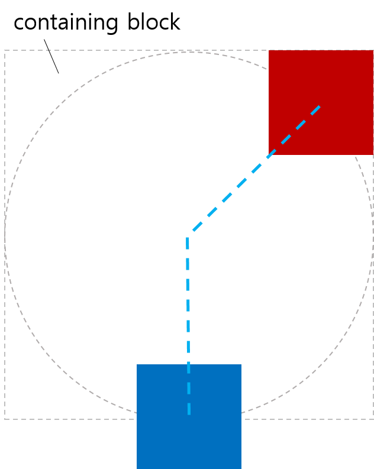
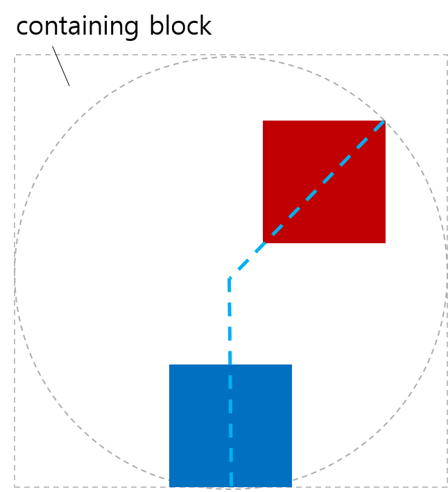
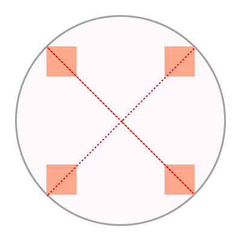
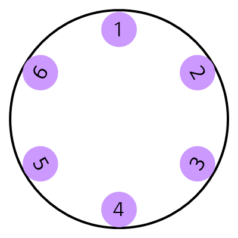

1. Introduction
This section is not normative.
Authors have possibilities to position objects like elements, boxes or containers relative to each other or absolutely in their own coordinate system. CSS Transforms extends these possibilities with a set of transform functions allowing authors to mutate the object’s local coordinate system. With CSS Animations and CSS Transitions, these static placements can change over a given period of time. Both kind of animations are powerful to express transitions in time but not suitable to describe transitions of location of an object over time.
This specification allows authors to specify a path. The object can be positioned, transitioned and animated along this path over a given period of time. The time may be static if no animation was specified.
In the following example, a schematic of an air plane is animated along a path. The plane faces in the direction of the path at each position on the path.

A black plane at different positions on a blue dotted path, rotated in the direction of the path.
A path may consist of an <angle> or <basic-shape> like <circle()>, <inset()> or <polygon()>. To allow authors to specify curves and sub-paths, this specification adds the <path()> function in addition to the existing <basic-shape> functions. The <path()> function takes an SVG Path string as input [SVG2]. As a third option, authors may reference an SVG shape element by <url> which is used as the path.
2. Module interactions
This specification defines a set of CSS properties that affect the visual rendering of elements to which those properties are applied. These effects are applied after elements have been sized and positioned according to the Visual formatting model from [CSS21]. Some values of these properties result in the creation of a stacking context.
Some CSS properties in this specification manipulate the user coordinate system of the element by transformations. These transformations are pre-multiplied to transformations specified by the transform property or deriving properties.
The term object bounding box follows the definition in SVG 1.1 [SVG11].
3. Values
This specification follows the CSS property definition conventions from [CSS21]. Basic shapes are defined in CSS Shapes Module Level 1 [CSS-SHAPES]. Value types not defined in these specifications are defined in CSS Values and Units Module Level 3 [CSS3VAL]. Basic shapes are extended by the <path()> basic shape function.
In addition to the property-specific values listed in their definitions, all properties defined in this specification also accept CSS-wide keywords such as inherit as their property value [CSS3VAL]. For readability it has not been repeated explicitly.
4. Motion Paths
Add more details and examples.
4.1. Define a path: The offset-path property
| Name: | offset-path |
|---|---|
| Value: | <url> | <angle> && contain? | [ <basic-shape> | <path()> ] || <geometry-box> | none |
| Initial: | none |
| Applies to: | All elements. In SVG, it applies to container elements excluding the defs element and all graphics elements
|
| Inherited: | no |
| Percentages: | n/a |
| Media: | visual |
| Computed value: | as specified |
| Canonical order: | per grammar |
| Animatable: | If the start and end values are <angle> values, otherwise no |
Specifies the path the element gets positioned at. The element’s exact position on the path is determined by the offset-distance property. A path is either a specified path with one or multiple sub-paths or the geometry of a not styled basic shape. Each shape or path must define an initial position for the computed value of "0" for offset-distance and an initial direction which specifies the rotation of the object on the initial position.
In this specification, a direction (or rotation) of 0 degree is equivalent to the direction of
the positive y-axis in the object’s local coordinate system.
E.g. A rotation of 0 degree points to the upper side of the UA if the object
and its ancestors have no transformation applied.
Values have the following meanings:
- <angle>
-
The path is a line segment that starts from the position of the element
and proceeds in the direction defined by the specified <angle> from the y axis.
The path ends at the edge of the containing block.
For <angle>, the initial value none is interpreted as 0deg,
the element can be positioned along the y axis.
If the <angle> value increases in the positive direction, the element moves clockwise.
Note: Defining a path with <angle>, the element can be positioned with the used of polar coordinates. The polar coordinate system is a two-dimensional coordinate system in which each point on a plane is determined by a distance from a fixed point and an angle from a fixed line. The fixed point which is similar to the origin of a Cartesian coordinate system is called the pole, and the fixed line which is a ray from the pole is the polar axis. This coordinate system specifies the position of a point with a certain distance from the pole and a certain angle measured from the polar axis to the segment connecting the pole.
In mathematical theory, the polar axis is commonly defined as the positive direction of the x axis, but we consider the polar axis as the positive direction of the y axis for consistency with other CSS specifications such as [CSS3VAL], <angle> value. (as the preceding line doesn’t have "x axis position")- contain
- When the value of offset-distance would select a point on the path
which is outside the edge of the containing element, the value is instead clipped
so that the selected point lies on the edge of the element.
Here are some examples. The first example shows that some parts of elements are outside of the path.
<body> <div style="offset-path: 45deg; offset-distance: 100%"></div> <div style="offset-path: 180deg; offset-distance: 100%"></div> </body>
offset-path without contain In the second example, contain is given to the offset-path value of each element to avoid overflowing.
<body> <div style="offset-path: 45deg contain; offset-distance: 100%"></div> <div style="offset-path: 180deg contain; offset-distance: 100%"></div> </body>
offset-path with contain
- <basic-shape>
-
The path is a basic shape as specified in CSS Shapes [CSS-SHAPES].
The initial position and the initial direction for basic shapes are defined as follows:
- <circle()>
- <ellipse()>
- The initial position is defined by the point where a virtual tangent to the circle/ellipse would reach the top vertical position. The initial direction is 90 degrees.
- <inset()>
- The initial position is defined by the left top corner of the rectangle. The initial direction is 0 degree.
- <polygon()>
- The initial position is defined by the first coordinate pair of the polygon. The initial direction is defined by the vector connecting the initial position with the next following coordinate pair that isn’t equal to the initial position. If there is no such unequal coordinate pair, the initial direction is defined with 0 degree.
- <circle()>
- path() = path([ <fill-rule> ,]? <string>)
-
The <string> represents an SVG Path data string.
The path data string must be conform to the grammar and parsing rules of SVG 1.1 [SVG11].
The initial position is defined by the first “move to” argument in the path string. For the initial direction follow SVG 1.1 [SVG11].
<fill-rule> - The filling rule used to determine the interior of the path. See fill-rule property in SVG for details. Possible values are nonzero or evenodd. Default value when omitted is nonzero.
- <url>
- References an SVG shape element and uses its geometry as path. See SVG 1.1 for more information about the initial position and initial direction [SVG11].
- none
- No path gets created.
A computed value of other than none results in the creation of a stacking context [CSS21] the same way that CSS opacity [CSS3COLOR] does for values other than 1, unless the element is an SVG element without an associated CSS layout box.
A reference that fails to download, is not a reference to an SVG shape element element, or is non-existent is ignored. No path and no stacking context are created.
See the section “Offset processing” for how to process a path.
For SVG elements without associated CSS layout box, the used value for content-box, padding-box, border-box and margin-box is fill-box.
For elements with associated CSS layout box, the used value for fill-box, stroke-box and view-box is border-box.
4.2. Position on the path: The offset-distance property
| Name: | offset-distance |
|---|---|
| Value: | <length-percentage> <size>? |
| Initial: | 0 |
| Applies to: | All elements. In SVG, it applies to container elements excluding the defs element and all graphics elements
|
| Inherited: | no |
| Percentages: | refer to the total path length |
| Media: | visual |
| Computed value: | as specified |
| Canonical order: | per grammar |
| Animatable: | yes |
Describes the position of the element along the specified path.
- <length-percentage>
-
The distance from the initial position of the shape or path to the position
of the element.
Percentages are relative to the length of the path - that is the distance between the initial position and the end position of the path.
- <size>
-
Decides the position of the end point of the path when it is used with <percentage>.
When the offset of the element on the path is specified with <percentage>,
it needs to guarantee the constant calculated value regardless of <angle>.
To do that, <size> gives a distance between the start point and the end point of the path.
It is defined as
<size> = [ closest-side | closest-corner | farthest-side | farthest-corner ]
If omitted it defaults to closest-side.
- closet-side
- The distance is measured between the initial position and the closest side of the box from it.
- closest-corner
- The distance is measured between the initial position and the closest corner of the box from it.
- farthest-side
- The distance is measured between the initial position and the farthest side of the box from it.
- farthest-corner
- The distance is measured between the initial position and the farthest corner of the box from it.
Note: When the initial position is at one of the corners of the containing block, the closest side takes the edge that the initial position is on. Even if the offset given by <length> or <percentage> changes, the position of the element specified with closest-side is the same.
See the section “Offset processing” for how to process an offset-distance.
This example shows a way to align elements within the polar coordinate system using offset-path, offset-distance.<body> <div id="circle1"</div> <div id="circle2"</div> <div id="circle3"</div> </body> <style> #circle1 { offset-path: 0deg; offset-distance: 50%; } #circle2 { offset-path: 90deg; offset-distance: 20%; } #circle3 { offset-path: 225deg; offset-distance: 100%; } </style>

An example of positioning element in polar coordinates 4.3. Define the initial position of the path: The offset-position property
Name: offset-position Value: auto | <position> Initial: auto Applies to: all elements Inherited: no Percentages: Refer to the size of containing block Media: visual Computed value: as specified Canonical order: per grammar Animatable: as position Specifies the initial position of the path.
Values are defined as follows:
- auto
- Computes to the current position of the element.
- <position>
- Represents the horizontal and the vertical offsets of the initial position of the path from the top left corner of the containing block that are computed as specified in CSS Backgrounds [CSS3-BACKGROUND].
4.4. Define an anchor point: The offset-anchor property
Name: offset-anchor Value: <position> Initial: auto Applies to: all elements Inherited: no Percentages: Relative to the width and the height of an element Media: visual Computed value: as specified Canonical order: per grammar Animatable: as <position> Defines an anchor point of the element positioned along the path. The anchor specifies the point of the element which is to be considered as the point that is moved along the path.
Values have the following meanings:
- auto
- Computes to the value from offset-position. When auto is given to offset-anchor, offset-position behaves similar to background-position.
- <position>
-
- <percentage>
- A percentage for the horizontal offset is relative to width of content box area of the element. A percentage for the vertical offset is relative to the height of the content box area of the element. For example, with a value pair of '100%, 0%', an anchor point is on the upper right corner of the element.
- <length>
- A length value gives a length offset from the upper left corner of the element’s content area.
The following explains how to set the anchor point of the element.#plane { offset-anchor: center; }
The red dot in the middle of the shape indicates the anchor point of the shape.

A red dot in the middle of a plane shape indicates the shape’s anchor point. This example shows an alignment of four elements with different anchor points.<style> #item1 { offset-path: 45deg; offset-distance: 100%; offset-anchor: right top; } #item2 { offset-path: 135deg; offset-distance: 100%; offset-anchor: right bottom; } #item3 { offset-path: 225deg; offset-distance: 100%; offset-anchor: left bottom; } #item4 { offset-path: 315deg; offset-distance: 100%; offset-anchor: left top; } </style> <body> <div id="item1"></div> <div id="item2"></div> <div id="item3"></div> <div id="item4"></div> </body>
An example of offset-anchor 4.5. Rotation at point: The offset-rotation property
Name: offset-rotation Value: [ auto | reverse ] && <angle> Initial: auto Applies to: All elements. In SVG, it applies to container elements excluding the defselement and all graphics elementsInherited: no Percentages: n/a Media: visual Computed value: as specified Canonical order: per grammar Animatable: yes Defines the direction of the element while positioning along the path.
Values have the following meanings:
- auto
- Indicates that the object is rotated (over time if offset-distance is animated) by the angle of the direction (i.e., directional tangent vector) of the path. If specified in combination with <angle>, the computed value of <angle> is added to the computed value of auto.
- reverse
-
Indicates that the object is rotated (over time if offset-distance is animated) by
the angle of the direction
(i.e., directional tangent vector) of the path plus 180 degrees.
If specified in combination with <angle>, the computed value of <angle> is added
to the computed value of reverse.
This is the same as specifying auto 180deg.
- <angle>
- Indicates that the element has a constant rotation transformation applied to it by the specified rotation angle. See definitions of auto or reverse if specified in combination with either one of the keywords. For the purpose of this argument, 0deg points to the right side in the direction of the positive y-axis, and positive angles represent clockwise rotation, so 90deg point toward the direction of the positive x-axis.
Note: The rotation described here does not override or replace any rotation defined by the transform property.
The following examples use the shape of a plane. The red dot in the middle of the shape indicates the origin of the shape.
A red dot in the middle of a plane shape indicates the shape’s origin. When the shape’s point of origin is placed at different positions along the path and offset-rotation isn’t specified, the shape points to the positive direction of the x-axis.

A black plane at different positions on a blue dotted path without rotation transforms. If the offset-rotation property is set to auto, the shape’s point of origin is placed at different positions along the path. The shape is rotated based on the gradient at the current position and faces the direction of the path at this position.

A black plane at different positions on a blue dotted path, rotated in the direction of the path. In this example, the offset-rotation property is set to reverse. The plane faces the opposite direction of the path at each position on the path.

A black plane at different positions on a blue dotted path, rotated in the opposite direction of the path. The last example sets the offset-rotation property to 45deg. The shape is rotated by 45 degree once and keeps the rotation at each position on the path.

A black plane at different positions on a blue dotted path, rotated by a fixed amount of degree. This example shows how auto or reverse works specified in combination with <angle>. The computed value of <angle> is added to the computed value of auto or reverse.<style> body { border-radius: 50%; } #item1 { offset-path: 0deg; offset-distance: 90%; offset-rotate: auto 90deg; } #item2 { offset-path: 45deg; offset-distance: 90%; offset-rotate: auto 90deg; } #item3 { offset-path: 135deg; offset-distance: 90%; offset-rotate: auto -90deg; } #item4 { offset-path: 180deg; offset-distance: 90%; offset-rotate: auto -90deg; } #item5 { offset-path: 225deg; offset-distance: 90%; offset-rotate: auto -90deg; } #item6 { offset-path: -45deg; offset-distance: 90%; offset-rotate: auto 90deg; } </style> <body> <div id="item1">1</div> <div id="item2">2</div> <div id="item3">3</div> <div id="item4">4</div> <div id="item5">5</div> <div id="item6">6</div> </body>
The elements are rotated by the value of auto with a fixed amount of degree. More natural names requested for auto and reverse.
See the section “Offset processing” for how to process an offset-rotation.
4.6. Offset shorthand: The offset property
Name: offset Value: <offset-path> && <offset-distance> && <offset-position> && <offset-anchor> && <offset-rotation> Initial: see individual properties Applies to: All elements. In SVG, it applies to container elements excluding the defselement and all graphics elementsInherited: no Percentages: see individual properties Media: visual Computed value: see individual properties Canonical order: per grammar Animatable: see individual properties This is a shorthand property for setting offset-path, offset-distance, offset-position, offset-anchor and offset-rotation. Omitted values are set to their initial values.
4.7. Offset processing
4.7.1. Calculating the computed distance along a path
Processing the distance along a path operates differently depending upon whether the path is open or closed:
-
References to <angle> lines are closed.
-
All basic CSS shapes are closed.
-
Paths (including references to SVG Paths) are closed only if the final command in the path list is a closepath command ("z" or "Z").
-
References to SVG circles, ellipses, images, polygons and rects are closed.
-
References to SVG lines and polylines are open.
To determine the computed distance for a given path and distance:
-
Let the total length be the total length of path with all sub-paths.
-
-
If distance is a length:
-
Let upper bound be equal to the total length.
-
Otherwise:
-
Let upper bound be equal to 100%.
-
-
-
If path is a closed path:
-
Let computed distance be equal to distance modulus upper bound.
-
Otherwise:
-
Let computed distance be equal to distance clamped by 0 and upper bound.
-
4.7.2. Calculating the path transform
-
Let path be the geometry of the closed line segment, specified basic shape, path or SVG shape element reference.
-
Let distance be the computed value of offset-distance.
-
-
If path is a valid path:
-
-
Determine the computed distance by invoking the process for Calculating the computed distance along a path on path and distance.
-
Let position be the coordinate pair at computed distance along path.
-
Create the supplemental transformation matrix transform to the local coordinate system of the element.
-
Translate transform by position.
-
Let rotate be the computed value of offset-rotation.
-
Post-multiply the rotation rotate to transform.
-
Post-multiply transform to the local coordinate system of the element.
-
-
Do we need to say how to get the position in more detail?
There needs to be a process for converting rotate to an angle.
Do we need to specify an origin of the element in motion so that it can be positioned accordingly before the motion? Something like motion-origin? Should we reuse transform-origin? (Probably not since the z coordinate doesn’t make any sense.)